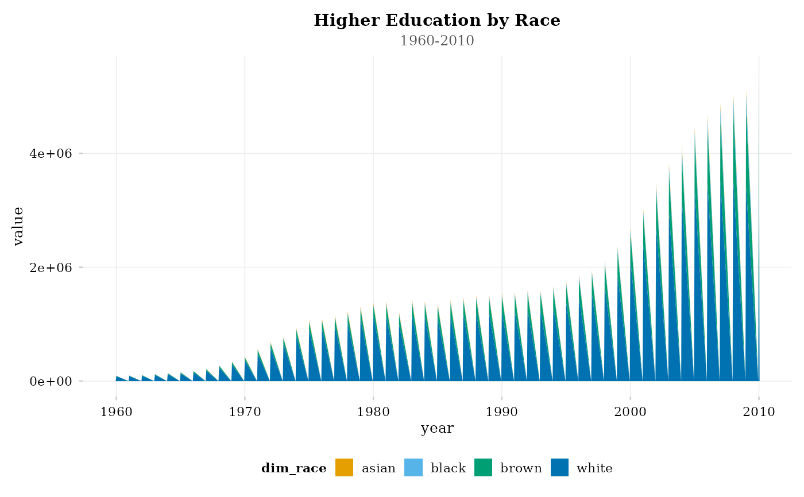
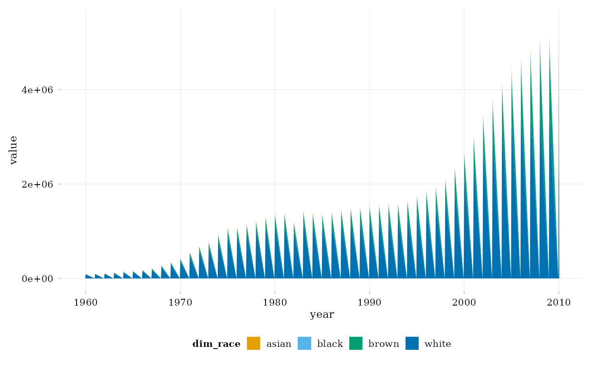

A standardized visualization system for the educabr2 package, heavily inspired by
Kieran Healy's "Data Visualization: A Practical Introduction" (2018/2026).
This theme is designed to produce beautiful, standardized, and colorblind-safe
(Okabe-Ito palette) graphics. It is structurally compatible with the ongoing
MA Thesis by Tales Mançano (2026), ensuring that plots generated via this
package meet rigorous academic presentation standards.
Arguments
- base_size
Base font size.
- base_family
Base font family. Defaults to "serif" if Latin Modern is unavailable.
- plot_titles
Logical. If
TRUE(default), standard titles, subtitles, and captions are styled and displayed inside the plot image. IfFALSE, titles, subtitles, and captions are completely removed (element_blank()). This is highly recommended for academic papers, LaTeX, or Quarto documents where captions and source notes are managed in the main markdown/TeX text (e.g., usingfig-caporfignoteenvironments) rather than baked into the graphic file.
Font Registration
The theme attempts to automatically load and register the LaTeX-standard
Latin Modern Roman font family to match academic publishing standards.
It queries the system's local TinyTeX installation (checking standard directories in
%APPDATA% on Windows and ~/.Library on Unix/macOS). If the font files
(e.g. lmroman10-regular.otf) are found and the showtext and sysfonts packages are
installed, it registers them dynamically. If the font files are not found or packages
are missing, the theme falls back gracefully to the system's default "serif" family.
References
Healy, K. (2018). Data Visualization: A Practical Introduction. Princeton University Press. https://socviz.co/
Mançano, T. (2026). The Politics of Reforming Tertiary Education (MA Thesis in progress).
Okabe, M., & Ito, K. (2008). Color Universal Design (CUD): How to make figures and presentations that are friendly to Colorblind people. https://jfly.uni-koeln.de/color/
Examples
# \donttest{
library(ggplot2)
library(educabr2)
df <- get_enrollment(level = "superior", dimension = "race")
# Standard plot with titles inside the image (default)
ggplot(df, aes(x = year, y = value, fill = dim_race)) +
geom_area() +
labs(title = "Higher Education by Race", subtitle = "1960-2010") +
theme_educabr(plot_titles = TRUE) +
scale_fill_educabr()

# Academic plot without titles inside the image
ggplot(df, aes(x = year, y = value, fill = dim_race)) +
geom_area() +
theme_educabr(plot_titles = FALSE) +
scale_fill_educabr()

# }